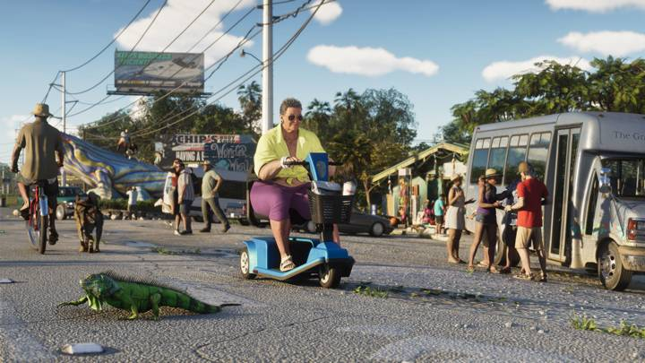
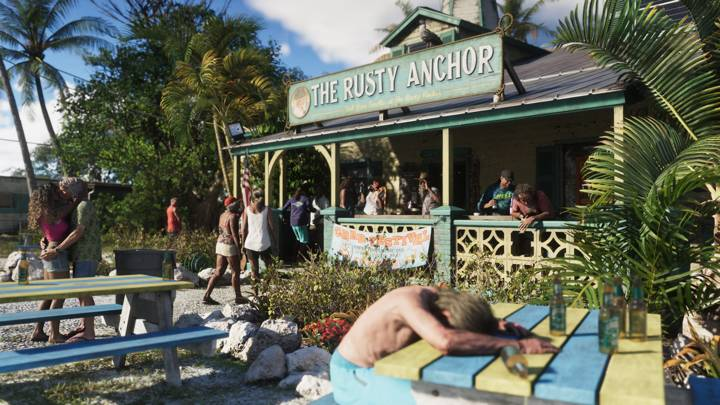
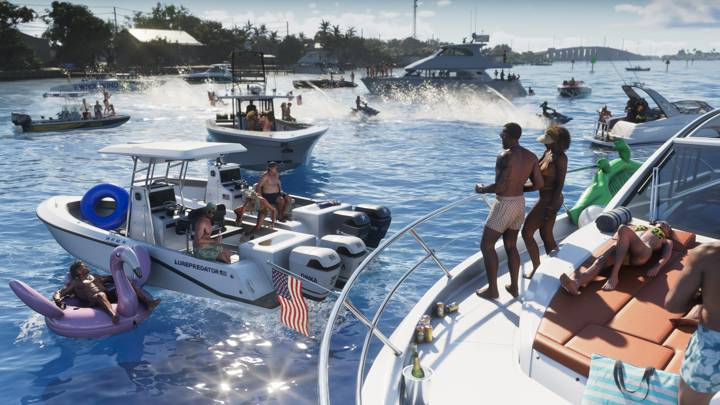

Leonida Keys — игровая версия Флорида-Кис, цепочки примерно из 1700 островов к югу от материка. Главная деталь и в игре, и в реальности — дорога по мостам над океаном.
В реальности острова связывает Заморское шоссе (Overseas Highway): около 182 км и 42 моста от материка до Ки-Уэста — самой южной точки континентальных США. В игре здесь начинается история Джейсона.
Коротко
- Прототип — Флорида-Кис, около 1700 островов.
- Заморское шоссе: ~182 км, 42 моста, самый известный — Семимильный.
- Ки-Уэст — самая южная точка континентальных США.




 vs
vs
 vs
vs
 vs
vs